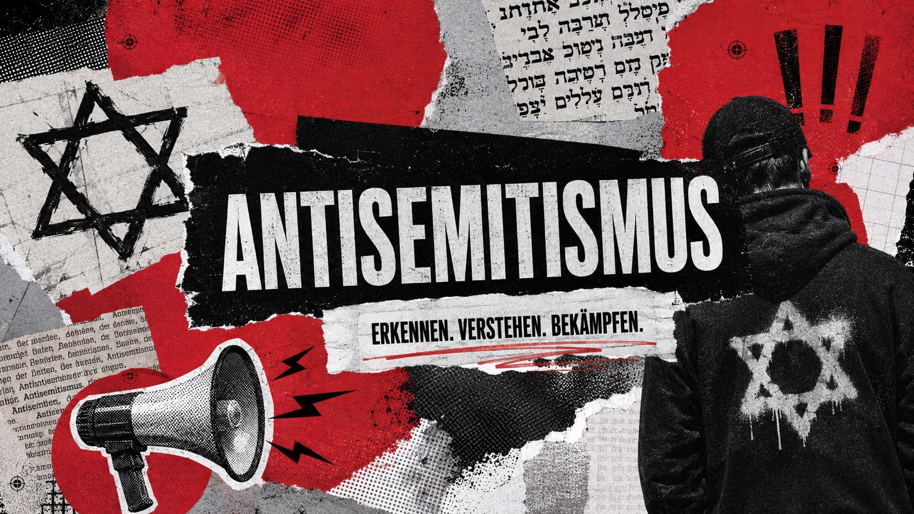
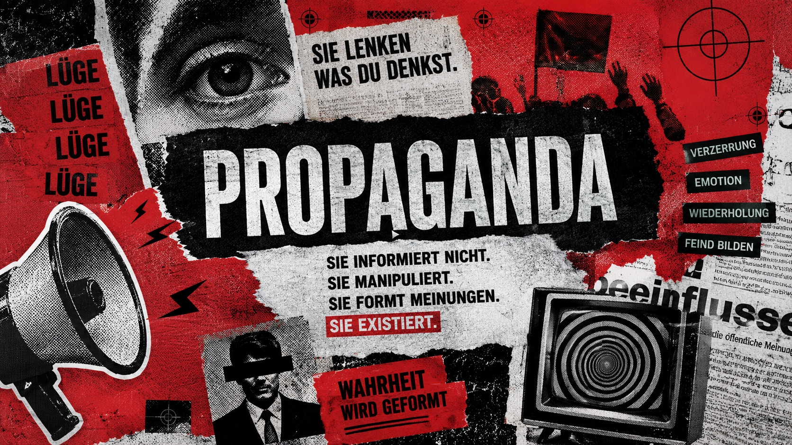
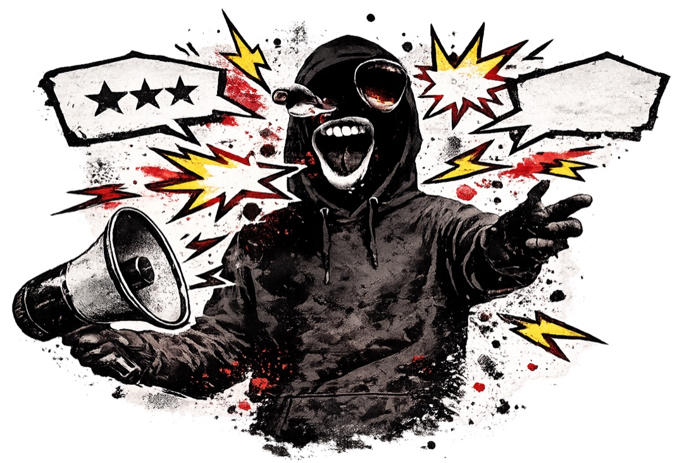

Erkennen. Verstehen. Widersprechen.
Erkennen. Verstehen. Widersprechen.
Hass sagt nicht mehr, wie er heißt. Er sagt Globalisten. Er schreibt 109. Er setzt drei Klammern um ein Wort — und alle Eingeweihten wissen Bescheid.
0 Codes
Scan
Test
Codes
Mechanik
Codes sind kein Zufall. Sie benutzen vier Hebel — immer dieselben. Wer die kennt, erkennt auch Codes, die in keiner Liste stehen.

Was tun
Fünf Dinge, die wirklich etwas ändern — und eines, das du besser lässt. Kein Appell, sondern Handwerk.

Melden
Antisemitische Vorfälle, Symbole oder Drohungen kann man melden — anonym und ohne Anzeige.